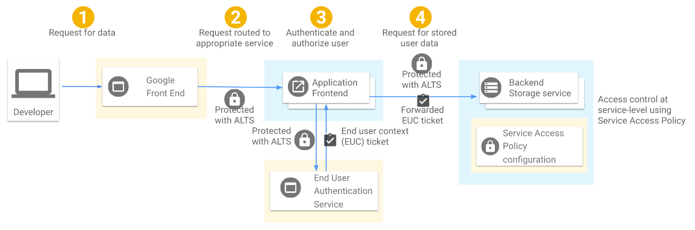
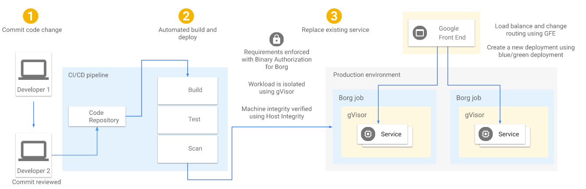

转载自: https://arthurchiao.github.io/
本文内容仅供学习交流，如有侵权立即删除。
译者序
本文翻译自 2019 年 Google 的一篇白皮书 BeyondProd: A new approach to cloud-native security， 介绍了其最新的云原生安全模型。
Google 虽有官方中文版，但机器翻译痕迹略重，相比原文反而增加阅读障碍；故有此拙译 ，仅供个人学习交流（排版略有调整，以方便网页阅读）。
由于译者水平有限，本文不免存在遗漏或错误之处。如有疑问，请查阅原文。
以下是译文。
Google 此前的几篇白皮书已经介绍我们内部开发的一些增强安全性的项目。从命名来说 ，BeyondProd 是有意让人回想起我们先前的另一个概念 BeyondCorp —— 就像边界安全模型（perimeter security model）不再适用于终端用户（end users）一样，它 也不再适用于微服务场景。因此，套用最初 BeyondCorp 论文 中的句子，我们可以说：“… 本模型的核心假设不再成立：边界不再仅限于企业的
物理位置[数据中心]，边界内的东西不再是免检的（blessed），边界内也不再 是一个能够安全地存放个人计算设备和企业应用[微服务]的地方。”本白皮书介绍 Google 基础设施的多个组件是如何协同工作来保证负载（workload）安全的 —— 我们所使用的架构如今被称为“云原生”（cloud-native）架构。如果想对 Google 安全有一个整体了解，推荐阅读 Security Infrastructure Design whitepaper。
本文内容截止 2019 年 12 月还是有效的。本白皮书介绍直至本文写作时 BeyondProd 的 现状。Google Cloud 的安全策略和系统可能会随着时间发生变化，正如我们会持续提高 对用户的安全保护一样。
术语（Glossary）
本文将用到以下术语：
微服务（microservice）：微服务将一个应用需要执行的多个独立任务（ individual tasks）拆分为单独的服务（separate services），每个服务都有自己 的 API、独立开发、维护、发布、扩容和管理配额。
在更加现代的架构中，应用（例如一个网站）是以一系列微服务（a collection of microservices）的形式而非单个单体服务（single monolithic service）的方式运行的。
微服务是独立的、模块化的、动态的、生命周期较短的（ephemeral）。微服务能够分布到不同的机器上，不同的集群中，甚至不同的云上。
负载（workload）：一个 workload 就是应用完成的一个特定任务（a unique task that an application completes）。
在微服务架构中，一个 workload 可能是一个或多个微服务。
作业（job）：一个 job 是微服务的一个实例（a single instance of a microservice），执行应用的一部分功能（running some part of an application）。
服务身份（service identity）：在基础设施中，微服务之间使用服务身份做认证。
服务网格（service mesh）：service mesh 是一个服务之间通信（service-to-service communication）的基础设施层（infrastructure layer），能够控制流量、应用策略， 提供中心式的服务调用监控。
微服务引入 service mesh 之后能够降低每个服务的开发负担，因为它们不再需要自己费力地实现一遍这些功能；另外，service mesh 还使得微服务之间的管理更加简单，也更加集中。
首席信息官必读（CIO-level summary）
Google 基础设施中，每个 workload 都作为独立的微服务部署（deploys workloads as individual microservices），在虚拟化层使用容器，并使用我们的容器编排系统 Borg 来管理这些 workloads。如今火爆业界的“云原生”架构，就是从 Borg 得到灵感 ，并参考了其设计。
Google 基础设施在设计时就考虑了安全，而不是事后加的。
我们假设服务之间是无信任的（no trust between services）。
Google 基于名为 BeyondProd 的方案保护微服务安全。该方案包括代码如何变更 ，以及如何访问微服务内的用户数据。
BeyondProd 应用了如下概念：
- 双向认证微服务端点（mutually authenticated service endpoints）
- 传输安全（transport security）
- 带 GSLB 和 DoS 防护功能的边界终止（edge termination with global load balancing and denial of service protection）
- 端到端代码来源验证（end-to-end code provenance）
- 运行时沙盒（runtime sandboxing）
从传统安全模型迁移到云原生安全模型，主要涉及两方面改动：基础设施和开发过程 （infrastructure and development process）
将共享的组件（components）打造成一个共享的交换网格（fabric，在数据中心 网络中通常表示全连接的交换矩阵，译者注），用这个 fabric 将所有微服务的通信连接起来（enveloping and connecting），即所谓的 service mesh，会使得发布变更（roll out changes）和获得一致的安全性（consistent security across services）更加容易。
设计动机（Motivation）
出于下面几个原因：
- 获得更高的资源利用率
- 构建高可用的应用
- 简化 Google 开发者的工作
我们迁移到了容器和容器编排平台。
除此之外，我们迁移到容器化的基础设施还有一个初衷：将安全控制和架构进行对齐 （align our security controls with our architecture）。
我们已经很清楚地知道，基于边界的安全模型（perimeter-based security model）并非足 够安全。攻击者一旦攻破了边界，就能够在网络内部任意游走。我们意识到需要在基础设施中引入更强的安全控制，但也希望这些控制对 Google 开发者是友好的：他们能够轻 松地编写和部署安全的应用，而不用亲自实现安全特性。
从单体应用迁移到容器化的分布式微服务，并基于容器编排系统来编排这些服务，带来了两 方面好处，并且这两方面相互交织：
- 管理更简单
- 可扩展性更好
这种云原生架构需要一种不同的安全模型，以及不同的工具来保护应用部署，以便与微服务的管理和扩展性收益相匹配。
本文描述 Google 是如何实现云原生安全（即 BeyondProd）的，包括：
- 向云原生的转变，对安全意味着什么（what the change to cloud-native means for security）
- 云原生安全的安全原则（security principles）
- 为满足这些需求所构建的系统
- 一些指导原则，基于这些原则你也能构建一套类似的安全控制
Google 的云原生安全
容器化的微服务
Google 在初期就有意识地用价格低廉的普通服务器而非昂贵的高可用硬件构建自己的数据 中心。我们的可靠性指导哲学是 —— 并且将一直是：允许系统的任何部分发生故障 ，但不能对用户可见的服务产生影响。
达到这个可用性目标就需要部署冗余实例，这样单个实例挂掉时服务仍然可用。这种哲学的成果之一是：我们开发了容器、微服务和容器编排系统，以便可扩展地管理这些高冗 余和分布式系统的部署。
容器化的基础设施意味着，每个 workload 都自成一体，作为一组容器部署，这些容器具有 不可变（immutable）、可移动（moveable）、可调度（scheduleable）的特点。为了管理这些容器，我们开发了一个称为 Borg [1] 的容器编排系统，现在我们仍然在使用，每周部署几十亿个容器。
容器的部署方式使得 workload 二进制文件打包（bin pack）和在机器间重调度（ reschedule across machines）更方便。微服务使得开发和调试应用的某个部分更方便。这两者结合起来，微服务和容器使得 workloads 能够拆分为更小的、更易维护和发现的单元。
迁移到基于容器化基础设施的微服务架构， 即如今所谓的向 “云原生” 转变（going “cloud-native”）。 服务都运行在容器内，由 Borg 部署。这种架构能根据 workload 大小自动扩缩容：如果某 个 workload 请求量很大，可能就会扩出多个实例来分担请求。
Google 做得比较出色的一点是：安全作为重要组成部分，在历次架构演进过程中都会考虑到。比如我们已经使用多年的保护基础设施安全的 BeyondCorp 模型，以及近期的云原生安全（cloud-native security）概念。
采用这种微服务架构和开发流程的目标是：在开发和部署生命周期中，尽量早地解决安全问题 —— 越早解决代价越小 ——并且解决安全问题的方式要标准和一致（standardized and consistent）。最终结果是，开发者无需在安全上花太多时间，而仍然能获得更多的安 全性保证（spend less time on security while still achieving more secure outcomes ）。
迁移到云原生架构
传统的基于边界的安全模型中，防火墙保护着网络边界，所有用户和服务都位于边界之内并 且是完全受信任的。这种模型已经无法满足现代安全架构（modern security architectures）的需求。
现代企业中，用户的工作方式已经发生了变化，为了应对这种变化，我们之前提出了 BeyondCorp 模型。如今，用户都是移动办公的，工作地点经常会在公司的传统安全边界之 外，例如咖啡厅、飞机上，或者其他任何地方。在 BeyondCorp 中，我们弃用了特权企业网络（privileged corporate network）的概念，访问认证（authorized access）只依赖设备、用户凭证和属性（device and user credentials and attributes），而不关心用户（接入时）的网络位置（network location）。
云原生安全的理念与此类似，只不过关注点从用户（users）变成了服务（services ） —— 在云原生世界里，我们不能仅简单地依赖防火墙来保护生产网络（production network），正如我们不能依赖防火墙保护企业网络（corporate network）。
进一步，我们可以做如下对比：
- 企业网络中：不同的用户可能从不同的物理位置、通过不同的设备访问企业网络。
- 生产网络中：不同的开发者可能会将应用发布到不同的生产环境。在 BeyondProd 模型中，微服务可能会运行在有防火墙保护的数据中心、公有云、私有云， 或者第三方托管的服务商，而这些环境都是需要安全保护的。
另外，
- 企业网络中：用户会移动，使用不同设备，从不同位置接入。
- 生产网络中：微服务会移动，部署在不同环境中，跨异构机器（heterogeneous hosts）。
BeyondCorp 中提到，
“用户信任（user trust）应依据设备的可感知上下文的状态等信息，而不应依据能否连接到企业网络”。
” should be dependent on characteristics like the context-aware state of devices and not the ability to connect to the corp network”
类似地理念在 BeyondProd 中表述为，
“服务信任（service trust）应依据代码来源和服务身份等信息，而不应依据在生产网络中的位置，例如 IP 或 hostname identity”。
“service trust should be dependent on characteristics like code provenance and service identity, not the location in the production network, such as IP or hostname identity”.
云原生和应用部署
偏传统的安全模型主要关注基于边界的安全（perimeter-based security），只靠这种模型不足以保护云原生架构的安全。
考虑下面这个例子：
- 单体应用
- 部署在私有的企业数据中心
- 数据中心采用传统“接入-汇聚-核心”三级网络架构（three-tier architecture）
- 应用和物理资源都有足够的容量，能抗住突发事件的峰值负载
这种有特殊硬件和网络需求的应用，都会特意部署到特殊的机器，通常情况下，这些机器都有固定的 IP 地址。在这种情况下，应用的：
- 发布频率很低
- 发布很费劲
- 很难协调，因为变更会同时影响应用的不同部分
- 导致应用难以更新，轻易不更新，安全补丁也不能及时打上去
如果是云原生模型，情况就不同了：
- 容器将应用的可执行文件与底层的宿主机操作系统解耦，使得应用更易漂移（more portable）。
- 容器的设计使用方式是不可变（be used immutably），这意味着一旦部署容器就不会再变 —— 因此容器的重新构建和重新部署（rebuilt and redeployed）会更加频繁。
- Jobs 可根据负载大小灵活扩展（scaled to handle load），负载升高时部署新 jobs， 负载降下去之后部分 jobs 销毁。
- 容器经常会重启、销毁或重新调度，因此有硬件和网络的再利用和共享率更高。
- 基于标准的构建和分发流程（build and distribution process），即使多个团队独立管 理他们的微服务开发，团队之间的开发过程也会更加一致和统一。
- 最终结果：能在开发过程中的更早阶段开始考虑安全方面的问题（例如，安全评审 、代码扫描、漏洞管理）。
给安全工作带来的启示（Implications for security）
我们已经讨论了很多边界内部非受信（untrusted interior）的情况，即 BeyondCorp 中的用户，也适用于 BeyondProd 中的微服务 —— 但这需要安全做出哪些变化？表 1 列出了传统基础设施安全和云原生架构安全的对比。表中还给出了从前者迁移后者需要做哪些事情。
表 1：迁移到云原生架构面临的安全需求
| 传统基础设施安全 | 云原生安全 | 安全需求 |
|---|---|---|
| 基于边界的安全（例如防火墙），认为边界内可信 | 零信任安全，服务到服务通信需认证，环境内的服务之间默认没有信任 | 保护网络边界（仍然有效）；服务之间默认没有互信 |
| 应用的 IP 和硬件（机器）固定 | 资源利用率、重用、共享更好，包括 IP 和硬件 | 受信任的机器运行来源已知的代码 |
| 基于 IP 的身份 | 基于服务的身份 | 同上 |
| 服务运行在已知的、可预期的位置 | 服务可运行在环境中的任何地方，包括私有云/公有云混合部署 | 同上 |
| 安全相关的需求由应用来实现，每个应用单独实现 | 共享的安全需求，集成到服务中，集中地实施策略（enforcement policy） | 集中策略实施点（choke points），一致地应用到所有服务 |
| 对服务如何构建和评审实施的限制较少 | 安全相关的需求一致地应用到所以服务 | 同上 |
| 安全组件的可观测性较弱 | 有安全策略及其是否生效的全局视图 | 同上 |
| 发布不标准，发布频率较低 | 标准化的构建和发布流程，每个微服务变更独立，变更更频繁 | 简单、自动、标准化的变更发布流程 |
| 部署在虚拟机或物理机上，用物理机或 hypervisor 做隔离 | 二进制打包到容器镜像，运行在共享的操作系统上，需要 workload 隔离机制 | 在共享操作系统的 workload 之间做隔离 |
接下来对以上表格做一些解释。
从 “基于边界的安全”（perimeter-based security）到 “零信任安全”（zero-trust security）
在传统安全模型中，应用可以依赖私有数据中心的边界防火墙对入向流量做安全防护。
在云原生安全模型中，边界防火墙仍然必要，正如在 BeyondCorp 模型中一样，但单靠防火墙已经不够了。
这里并没有引入新的待解决的安全问题，而是意识到这样一个事实：如果单靠防火墙无法完 全保护企业网络（corporate network），那单靠防火墙同样不能完全保护生产网络（ production network）。
在零信任安全模型中，内部流量之间默认不再有信任 —— 需要其他的安全控制，例如认证和加密。同时，向微服务的转变提供了一个对传统安全模型进行重新思考的机会。
- 当去掉仅仅依赖网络边界（例如，防火墙）这一假设后，就可以按服务（service）对网络进行进一步划分。
- 顺着这个思路，更进一步，可以实现微服务级别的隔离（microservice-level segmentation），而服务之间无固有的信任（no inherent trust between services）。
- 在这种微服务架构下，流量会有不同层次的信任，每层都有不同的控制方式 —— 而 不再仅仅依据是内部流量还是外部流量来做区分。
从 “固定 IP 和硬件” 到 “更多地共享资源”
在传统安全模型中，应用都是部署到特定的机器上，这些机器的 IP 地址很少发生变化。这意味着安全工具看到的是一个相对静态的架构地图（architecture map），其中的应用 都是以可预知的方式联系到一起的 —— 因此防火墙这类的工具中，安全策略可以用 IP 地址 作为标识符（identifiers）。
但是，在云原生世界中，随着共享宿主机和变化频繁的 jobs，使用防火墙控制微服务间的访问变得不可行。我们不能再假设一个特定的 IP 地址会对应到一个特定的服务。因此， 身份应该基于服务，而不是 IP 地址或主机名（hostname）。
从 “应用特定的安全实现” 到 “共享的安全需求集成到服务栈中”
在传统安全模型中，每个应用负责实现自己的安全需求，与其他服务的安全实现完全独立。 这些安全需求包括：
- 身份管理（identity management）
- SSL/TLS termination
- 数据访问管理（data access management）
这种方式会导致不一致的实现，或者未能全局地解决某些安全问题，因为这些问题遍布在多 个地方，修复更加困难。
在云原生世界中，服务之间重用（reuse）组件的频率更高，并且有中心式的安全策略实施点（choke points），使得各服务的策略实施更加一致。可以使用不同的安全服务实施 不同的安全策略。此时每个应用不再需要自己实现关键的安全服务，你可以将这些安全策略 应用到独立的微服务（例如，一种策略用于保障用户数据的授权访问，另一种策略用于保证 使用了最新的 TLS 加密套件）。
从 “特定的、频率较低的发布流程” 到 “标准化的、频率更高的发布流程”
传统安全模型中，共享的服务非常少。代码（在整个应用内）更加分散，与本地开发（ local development）的耦合更高，这意味着如果一个变更会影响到应用的多个部分，我们 很难估计它可能导致的影响 —— 结果，发布频率变低，很难协调发布流程。在变更的时候， 开发者可能需要直接更新每个组件（例如，SSH 到虚拟机，更新某个配置）。综合起来，这 导致线上存在很多寿命极长的应用（extremely long-lived applications）（的实例）。
从安全的角度看，由于代码（在整个应用内）更加分散，因此更难 review；如果发现一个漏洞，要确保这个漏洞在所有代码中都修复了甚至更加困难。
迁移到频率更高、更加标准化的云原生发布后，安全在软件开发生命周期的位置就能够左移 [2]。这使得实现一致的安全策略实施（包括常规的安装安全补丁）更加简单。
从 “物理机或 hypervisor 隔离的 workload” 到 “二进制打包、运行在共享机器上、需要更强隔离性的 workload”
传统安全模型中，workloads 都是调度到各自专属的实例上，不存在共享资源，因此机器和网络边界能够有效地保护机器上的应用；另一方面，物理机器、hypervisor 和传统防 火墙也能够有效地隔离 workload。
在云原生世界中，workloads 都是容器化的，可执行文件打包到容器镜像，然后调度到共享 资源的机器上执行。因此，workload 之间需要有更强的隔离机制。通过网络控制、sandbox 之类的技术，能够部分地将 workload 隔离到不同的微服务。
安全原则
在设计云原生架构的过程中，我们希望在多个方面同时加固我们的安全（concurrently strengthen our security） —— 因此我们制定和优化了下面的这些安全原则：
在边界保护网络：能够在网络攻击和来自公网的未授权流量面前保护 workload。
虽然基于防火墙的方法对云原生来说并不是一个新概念，但它仍然是一条最佳安全 实践。在云原生环境中，边界方式（perimeter approach）用于最大程度地在来自 公网的未授权流量和潜在攻击（例如，大规模 DoS 攻击）面前保护基础设施。
服务之间默认没有互信：因此，只有已知的、受信的、认证过的调用方才能访问服务。
这能防止攻击者利用未受信的代码（untrusted code）访问服务。如果一个服务被攻陷了，这个服务能够阻止攻击者执行能扩展其访问范围的动作。这种双向非互信（ mutual distrust）有助于限制被入侵时的爆炸半径。
受信的机器运行来源已知的代码：这样就限制了服务只能使用认证过的代码和配置， 并且只能运行在认证过的、验证过的环境中。
在 Choke points 对所有服务实施一致的策略。
例如，在 choke point 验证访问用户数据的请求，服务访问权限从已授权终端用户的 已验证请求中推导（derived from a validated request from an authorized end user），管理员访问权限申请需要证明有业务必要（business justification）。
简单、自动化、标准化的发布变更流程：更容易评审基础设施的变更对安全的影 响；更新安全补丁对线上业务几乎没有影响。
在共享操作系统的 workloads 之间做隔离：一个服务被入侵后，不会影响同宿 主机上其他服务的安全。这限制了潜在入侵后的“爆炸半径”。
我们的最终目标是：实现整个基础设施之上的自动化安全控制，不依赖人工参与。
- 安全应当能以与服务一样的方式进行扩展。
- 对于服务来说，安全是日常，不安全是例外（secure by default and insecure by exception）。
- 人工干预应当是例外，而不是日常，并且人工干预的过程应当是可审计的。
- 最终我们能够基于服务部署时的代码和配置对服务进行认证，而不是基于对部署这个服务的人。
综上，这些安全原则的实现意味着，容器和其内运行的微服务应该是可部署的、能够与彼此通信的、共享资源的，且不会削弱云原生架构的优良特性（例如，简单的 workload 管理、 自动扩缩容、高效的可执行文件打包）。在不给微服务开发者增加负担、无需他们了解底层基础设施的安全和实现细节的前提下，这些目标仍然是可实现的。
Google 的内部安全服务
为保护 Google 的云原生基础设施，我们设计和开发了一些内部工具和服务。下面列出的这些工具和服务协同工作，实现了前面定义的安全原则。
Google Front End (GFE)： 终结来自终端用户的连接，提供一个集中实施 TLS 最佳实践的位置（central point for enforcing TLS best practices）。
虽然我们的重心已经不再是基于边界的安全，但 GFE 仍然是我们保护内部服务免受 DoS 攻击的安全策略重要组成部分。
GFE 外侧是用户连接到达 Google 后的第一个位置点；内侧负责将流量负载均衡和重路由（ rerouting）到合适的 region。在我们的基础设施中，GFE 是边缘代理，将流量路由到正 确的微服务。
Application Layer Transport Security (ALTS，应用层传输安全)： 用于 RPC 认证、完整性验证和加密。
ALTS 是 Google 基础设施中服务间的一个双向认证和传输加密系统。身份（ identities）通常与服务（services ）绑定，而不是与服务器名字或宿主机（server name or host）绑定。这使得无缝的微服务复制、负载均衡和跨宿主机重调度更加方便。
Binary Authorization（二进制授权）for Borg and Host Integrity：分别用于微服务和机器的完整性验证。
- Binary Authorization for Borg (BAB，Borg 二进制授权)： 一种部署时检查（deploy-time enforcement check）机制，确保代码在部署之前符 合内部安全要求。BAB 检查包括由其他工程师 review 过的变更、提交到仓库的 代码、在专属基础设施上构建出来的可验证二进制文件。在我们的基础设施中，BAB 防止了未授权微服务的部署。
- Host Integrity (HINT，宿主机完整性)：通过一个安全的启动过程，验证宿主 机系统软件的完整性，由安全的微控制器硬件在背后支持（secure microcontroller hardware）。HINT 检查包括验证 BIOS、BMC、Bootloader 和操作系统内核的数字签名。
Service Access Policy 和 End user context tickets：用于限制对数据的访问。
- Service Access Policy（服务访问策略）: 限制服务之间的数据访问。当从一个服务向另一个服务发起 RPC 调用时， Service Access Policy 会定义访问对端服务的数据时所需的认证、鉴权和审计策略。 这会限制数据访问方式、授予最小级别的访问权限，并规定这种访问应当如何审计。 在 Google 基础设施中， Service Access Policy 限制了一个微服务对另一方微服务的数据的访问，并支持访问控制的全局分析。
- End user context (EUC，终端用户上下文) tickets: 这些 tickets 由 End User Authentication service（终端用户认证服务）颁发，给每个服务提供一个用户身份 （user identity），这个身份与他们的服务身份（service identity）是独立的。 这些 tickets 是有完整性保护的（integrity-protected），中心式颁发的（centrally-issued）， 可转发的凭证（forwardable credentials），能够证明某个正在请求服务的终端用户的身份。 这使得服务之间不需要彼此信任，基于 ALTS 的对端身份（peer identity via ALTS）经常不足以完成授权，因为这种授权决定通常还要基于终端用户的身份。
用于蓝绿部署的 Borg 工具集 [3]：在执行维护任务时，这种工具负责对运行中的 workloads 进行迁移。
方式：现有的 Borg job 不动，加入一个新 Borg job，然后负载均衡器将流量逐步从 前者切到后者。
这种方式使得升级微服务时不会引起服务中断（downtime），终端用户无感知。
这种工具用于无间断地服务升级（服务添加了新特性），以及重要安全更新（例如 HeartBleed 和 Spectre/Meltdown)。如果变更会影响到 Google Cloud 基础设施，我们会使用热迁移（live migration） 保证虚拟机 workload 不受影响。
gVisor：用于 workload 隔离。
gVisor 使用一个用户态内核拦截和处理系统调用，减少与宿主机的交互以及潜在的攻击面。这个内核提供了运行一个应用所需的大部分功能，但缩小了应用能够访问到的宿主机内核表面（host kernel surface）。
在 Google 的基础设施中，内部应用和 Google Cloud 客户的应用共享宿主机，而 gVisor 就是我们隔离二者的重要工具之一。
表 2 列出了 Google 基础设施中，前面提到的各种安全原则所对应的工具。
表 2：安全原则和对应的 Google 内部工具
| 安全原则 | Google 内部安全工具/服务 |
|---|---|
| 在网络边界做防护 | GFE：管理 TLS termination 以及入向流量策略 |
| 服务间无内在的互信 | ALTS：用于 RPC 认证、完整性检查、加密和服务身份 |
| 受信的机器运行来源已知的代码 | BAB：代码来源验证。HINT：机器完整性验证 |
| 在 choke points 对所有服务实施一致的策略 | Service Access Policy：限制服务间如何访问数据。EUC ticket：证明初始请求者（original requester）的身份 |
| 简单、自动、标准化的变更发布 | Borg tooling：蓝绿部署 |
| 隔离共享操作系统的 workloads | gVisor |
综合到一起
本节描述在云原生世界中，前面讨论的各组件如何组织到一起，响应终端用户的请求。 这里我们看两个例子：
- 跟踪一个典型的用户数据请求，从其创建到请求到达目的地
- 跟踪一次代码变更，从开发直至发布到生产环境
需要说明的是，这里列出的技术并不是都会用于 Google 基础设施中的每个部分，具体 用到哪些取决于服务和 workloads。
例子：访问用户数据流程

Fig 1. Google 云原生架构安全控制 —— 访问用户数据
如图 1 所示，
- GFE 收到用户请求
- GFE 终止 TLS 连接，通过 ALTS [4] 将请求转发给合适的服务前端（service’s frontend）
- 应用前端使用一个中心式的 End User Authentication (EUA) 服务对用户请求进行认证 ，如果成功，会得到一个短期有效的、加密的 end user context ticket (EUC)
- 应用前端在请求中带上 EUC ticket，然后通过 ALTS 向存储后端服务发起 RPC 请求。
后端服务通过 Service Access Policy 来保证：
- 前端服务的 ALTS 身份是经过授权的，允许向后端服务发起请求，并且带了 EUC ticket。
- 前端的身份已经受 Binary Authorization for Borg (BAB) 保护。
- 请求中所带的 EUC ticket 是合法的。后端服务检查用户的 EUC ticket 是经过授权的 ，才允许访问其所请求的数据。
以上任何一步检查失败了，请求就会被拒绝。
很多情况下，后端调用形成一个调用链，每个中间服务都会在入向（inbound）RPC 执行 Service Access Policy 检查，并在出向（outbound）RPC 中带上 EUC ticket。
如果这些检查都通过了，数据就会返回给已授权的应用前端，后者再转发给已授权的用户。
机器和微服务 ALTS 凭证：
- 每个机器都有一个由 HINT 系统颁发的 ALTS 凭证，只有 HINT 验证过这台机器启动 是正常的（machine boot was successful），这个 ALTS 凭证才能被解密。
- 大部分 Google服务都以微服务的方式运行在 Borg 上，这些微服务都有各自的 ALTS身份。
- Borgmaster [5] 基于微服务的身份向 workloads 授予 ALTS 微服务凭证，如图 1 所示。
- 机器级别的 ALTS凭证成为了提供微服务凭证的安全通道（secure channel for provisioning microservice credentials），因此实际上只有成功地通过了 HINT 检查 的机器才能运行微服务 workloads。
例子：代码变更流程

Fig 2. Google 云原生架构安全控制 —— 代码变更
如图 2 所示，
- 开发者修改了某个微服务，这些变动必须提交到我们的中心式代码仓库进行 code review。
- code review 通过之后，变更会提交到一个中心式的、受信任的构建系统，后者会产生一个包（package），这个 package 附带了一个经过签名的、可验证的 build manifest 证书。在部署时（deployment time），BAB 会对已签名的证书进行验证。
- 所有 workload 更新（不管是例行更新，还是紧急安全补丁）都以蓝绿部署方式进行。 GFE 通过负载均衡将流量切换到新部署的版本上，保证业务的连续。
所有的 workloads 都需要隔离。如果 workload 可信程度较低，例如，是多租户 workload 或源代码来自 Google 之外，这种 workload 可能会被部署到 gVisor 保护的环 境中，或者利用其它层的隔离。如果应用的一个实例被入侵了，这种隔离能保证其它的实例不受影响。
BeyondProd 在 Google 的落地
押宝云原生（Going all in）
向云原生的转变，再加上基础设施之上的合理安全措施，使得 Google 能够提供非常强的安全特性，这包括我们的内部 workloads ，也包括外部（Google Clod）workloads。
通过构建共享的组件，每个开发者自己需要实现的公共安全需求降到了最低。
理想情况下，安全功能只应该有很少部分（甚至完全不应该）集成到每个应用中，而应该作 为一个底层的交换网格（fabric）连接各微服务。这种架构通常称为 service mesh。这同 时也意味着，安全能够从常规的开发或部署活动中独立出来，单独管理和实现。
转向云原生，Google 做了什么
Google 向云原生的转变主要涉及两个方面的改造工作：
- 基础设施
- 开发流程
我们是同时对这两方面做出调整的，但二者是可以解耦的，也可以针对二者分别做改造。
改造基础设施
我们首先构建了一个非常强大的提供服务身份、认证和鉴权的基础平台。
有了这样一个受信的服务身份平台，我们就能实现更高层的安全能力，这些高层能力依赖 服务身份做验证，例如 Service Access Policies 和 EUC tickets。
为使转变过程对新服务和老服务都比较简单平滑，ALTS 最开始是以函数库加辅助守护进程（a library with a single helper daemon） 的方式提供的。
- daemon 运行在宿主机上，会被每个服务调用，随着时间推移，演进成一个使用服务凭证 （a library using service credentials）的函数库。
- ALTS 库无缝集成到核心 RPC 库 —— 这大大方便了其被应用接入（gain wide adoption） ，而且不会给每个开发团队增加显著负担。
ALTS 是 Service Access Policies 和 EUC tickets 的前提，必须先于二者落地。
改造开发流程
打造一个健壮的构建和 code review 流程对 Google 至关重要。有了这些我们才能 确保运行中服务的完整性，以及 ALTS 使用的身份是有意义的。
我们实现了一个中心式的构建流程，在这里能够实施一些安全策略，例如在构建和部署时， 执行双人 code review 和自动化测试。（更多部署相关的细节，见 Binary Authorization for Borg whitepaper）
有了这些基础之后，开始尝试在我们的环境中运行外部非受信代码。为此，我们使 用了沙盒（sandboxing）—— 最初用 ptrace，后来切换到 gVisor。类似地，蓝绿部署给安 全提供了显著便利（例如安全补丁），并增强了可靠性。
在初期，我们很快意识到这样一点：服务的安全验证失败时，不应直接拒绝，而应打印出 验证失败的策略日志（logging policy violations rather than blocking violations ）。这能够带来两方面好处：
- 将服务迁移到云原生环境的过程中，给了服务的 owner 一个测试代码改动和评估对其服 务影响的机会
- 使得我们能及时修 bug，以及识别应当提供给服务团队哪些额外功能
例如，当一个服务新接入 BAB 时，服务 owner 会打开 audit-only 模式。这有助于 识别出不符合要求的代码和工作流。一旦解决了发现的这些问题，他们就可以关闭 audit-only 模式，切换到 enforcement 模式。
我们会先使用 gVisor 对 workloads进行沙盒测试，即使沙盒提供的能力和我们的需求之间 仍有差距，我们会不断找出这些差距，逐步增强沙盒的功能。
带来的收益
正如 BeyondCorp 帮助我们迈过了基于边界的安全模型时代，BeyondProd 也代表了一个类似的飞跃：这次解决的是生产环境的安全问题。
BeyondProd 方法描述了一个云原生安全架构，其：
- 假设服务之间没有信任
- 提供了 workload 之间的隔离
- 部署时验证，只有合法平台构建出来的应用（centrally built applications）才允许部署
- 自动化漏洞管理
- 对核心数据执行强访问控制
BeyondProd 架构促使 Google 研发了几个新系统来满足这些需求。
实际中，我们经常看到安全总是在最后时刻才被人们记起（security is ‘called in’ last）——在迁移到新架构的决定已经做出之后。更早地让你们的安全团队参与进来，并且关 注于新的安全模型带来的收益，例如更简单的补丁管理和更强的访问控制，云原生架构就能 为应用研发团队和安全团队带来巨大收益。
将本文描述的安全原则应用到你们的基础设施中，就能增强 workloads 的部署、 workloads 之间的通信安全，以及 workloads 之间的隔离性。
注
- Borg is Google’s cluster management system for scheduling and running workloads at scale. Borg was Google’s first unified container management system, and the inspiration for Kubernetes.
- “Shifting left” refers to moving steps earlier in the software development lifecycle, which may include steps like code, build, test, validate, and deploy. Lifecycle diagrams are frequently drawn from left to right, so left means at an earlier step.
- A blue/green deployment is a way to roll out a change to a workload without affecting incoming traffic, so that end users don’t experience any downtime in accessing the application.
- To better understand how traffic is routed inside Google’s infrastructure from the GFE to a service, see the How traffic gets routed section of our Encryption in Transit whitepaper.
- Borgmaster is Borg’s centralized controller. It manages scheduling of jobs, and communicates with running jobs on their status.